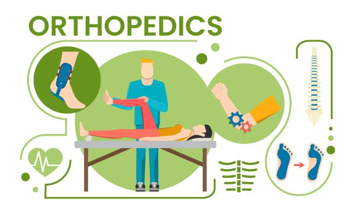

Our hospital’s orthopaedic department has the highest standards of orthopaedic care and is renowned for its expertise and resources in handling various types of services for patients in the field of orthopaedic medicine. Our doctors handle a wide range of surgeries which are only available at our hospital.

We are expanding our services and providing a host of various speciality orthopaedic services which cater to the diverse requirements of our patients who suffer from various problem. Our hospital is also provide physiotherapy and pre and post operative care for our esteemed patients who require these services.
Our hospital is equipped with a world class ortho-surgical facility and uses the latest ortho-surgical technology which makes our patients healthier and happier. Our greatest satisfaction is achieved when our patients are able to overcome their orthopaedic problems and lead normal lives.
Our orthopaedic department provides services in the following areas of specialization.
* Foot and Ankle Disorders
* Leg and hand deformations and disorders
* Disorders of the spinal cord and vertebral column
.jpg)